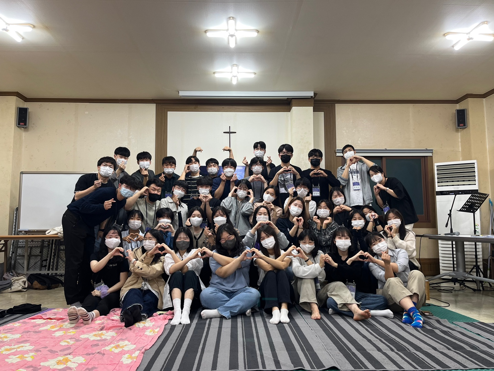

최근 근황 & 묵상
안녕하세요. 수능도 끝나고 12월이 다가오는 걸 보니, 이번 한해도 거의 끝나감을 실감하게 됩니다. 이제 나이 앞자리도 3으로 되는데, 생각보다 성장한 게 없는 것 같다는 아쉬움이 들기도 하는 것 같습니다. 저는 이번에 처음으로 비전선교단에서 진행하는 FS훈련 조장으로 섬기게 되었습니다. 6명의 친구들을 맡게 되었는데, 저의 부족함을 정말 많이 보기도 하고, 그럼에도 하나님의 도우심을 경험하는 감사한 시간들을 보냈습니다. 사람들을 섬기기 위해 기도하고 묵상하며 떠오른 생각과 마음들이, 또한 나를 향해 말씀하신다는 것을 느끼며, 내가 어떤 존재인지, 하나님이 얼마나 선하신지 조금씩 더 알게 됩니다.
<형제 훈련생들과 함께1>
이번 기도편지를 통해 나누고 싶은 특이사항이 있습니다. 바로 돌아오는 1월에(1월 15일~30일) 약 2주간 팔레스타인으로 단기선교를 가게 되었습니다. 이번에 비전선교단에서 FS훈련받은 훈련생들과, 간사님들을 포함해 12명이 한 팀이 되어 팔레스타인 지역으로 갑니다. 이전에 팔레스타인 - 이스라엘 지역에 3번 단기선교를 갔었는데, 약 5년 만에 다시 가게 되었네요. 솔직히 말하면, 팔레스타인 땅을 정말 사랑해서 간다기보다는, 열방에 갔을 때 보게 하신, 하나님의 사랑과 그분의 일하심을 다시 한번 보고 싶은 마음이 큰 것 같습니다. 하나님이 복음을 한 번도 들어본 적 없는 한 영혼을 구원하시기 위해, 우리를 사용하시는 과정을 보면, 내가 어떤 존재인지 다시 한번 선명하게 깨닫게 되어, 하나님의 자녀 된 정체성이 더욱 회복되고 싶은 마음으로, 그 기쁜 기억을 잊지 못해, 이번 단기선교를 선택하게 된 것 같습니다. 하나님이 그 땅에 한 영혼을 구원하기 위해서 얼마나 기다리셨는지, 그 애통해하시는 사랑의 마음을 조금이나마 느꼈기에 다시 한번 그 땅으로 나아갑니다(팔레스타인 지역에 대한 소개는 맨 아래에 더 자세히 있습니다)
<형제 훈련생 몇명과 함께 기도회한 후>
어느덧 선교단에서 진행하는 FS훈련도 거의 막바지에 이르렀습니다. 모두가 그렇듯이, 저도 바쁘게 보내고 있지만, 훈련생들이 많은 은혜를 받고 믿음으로 결단하며 변해가는 모습을 보면 참 신기하고 감사합니다. 훈련과 함께 단기선교 준비하며 여러 일들을 바쁘게 하는 것 같습니다. 이런 상황에서, 최근에 묵상하며 삶을 돌아보게 한 말씀이 있습니다.
 <형제 훈련생들과 함께2>
<형제 훈련생들과 함께2>
마가복음 12:1~3
1 예수께서 비유로 그들에게 말씀하시되 한 사람이 포도원을 만들어 산울타리로 두르고 즙 짜는 틀을 만들고 망대를 지어서 농부들에게 세로 주고 타국에 갔더니
2 때가 이르매 농부들에게 포도원 소출 얼마를 받으려고 한 종을 보내니
3 그들이 종을 잡아 심히 때리고 거저 보내었거늘
본문을 조금 설명하면, 하나님을 거역하고 따르지 않게 된 이스라엘을, 예수님이 비유로 책망하는 말씀입니다(농부의 원관념은 이스라엘의 지도자이지만, 확장해서 보면 모든 그리스도인도 포함될 것 같습니다). 비유로 표현된 농부에게, 포도원 주인은 상상하기 어려울 정도로 후한 대접을 해줍니다. 농부를 전적으로 신뢰하여, 자기가 다 만든 포도원을 맡기고 떠납니다. 얼마나 농부들을 신뢰했기에, 포도원을 맡겨놓고 아예 타국으로 가버립니다. 지금처럼, 실시간으로 연락하기도 어렵고, CCTV로 확인도 불가능한 오래 전 시대에, 감시체제도 만들지 않고 그냥 농부들에게 전적으로 모든 것을 맡긴 것입니다. 이후 주인은 농부들에게 포도원 소출 일부를 받을 것이라는 기대를 가지고 자신의 종들을 농부들에게 보냅니다.
하지만 농부는 주인의 기대를 배신합니다. 이후 말씀을 보면, 주인은 농부들을 기대함으로 계속 종들과 심지어 아들까지 보내지만, 농부들은 결국 주인의 아들을 죽이기까지 하며 포도원을 강탈하려 합니다. 생각해보면, 처음부터 농부들이 주인을 강하게 거역하는 자들이었다면, 아마 주인은 농부들에게 포도원을 전부 맡기지는 않았을 것 같습니다. 주인의 포도원에서 일하게 된 농부들은, 처음에는, 자신들을 전적으로 신뢰해주고 일을 주는 주인에게 감사한 마음으로 일했을 것 같습니다. 그런데, 어쩌다가... 농부들은 이렇게까지 된 것일까요? 본문의 농부가 또한 우리의 모습이라는 생각에, 어쩌다가 농부들이 주인의 은혜를 까먹고 배신하게 되었을지 그 과정에 대해서 묵상해보게 되었습니다.
 <간사님들과 패밀리타임>
<간사님들과 패밀리타임>
처음에 포도원을 가꿀 때, 농부들은 관리인으로 세를 받는다는 것만으로도 좋았을 것 같습니다. 자신들이 포도원을 위해 한 게 없지만 만들어진 좋은 것들을 누리고 있기 때문입니다. 이후 주인은 타국으로 떠나고, 포도원 소출이 나기까지 약 2~3년의 시간은 흐릅니다. 농부들은 나름 그곳을 지키며 일을하고 성취감을 느끼며 열매를 맺게 됩니다. 그 안에서 농부들은 나름의 수고를 하고, 자연스레 그들 마음 안에 `보상심리`라는 것이 생겼을 것 같습니다. 이 열매를 키우기 위해 내가 얼마나 헌신했는데, 이 열매는 내 것이지.. 이런 마음이 들기 시작하고, 내가 포도원을 지킨 세월이 얼마인데, `포도원에 내 지분이 있어` 라고 생각하며, 자신의 노력과 헌신에 대해서 자신의 권리를 주장하고 싶은 마음이 커졌을 것 같습니다. 그 마음이 점점 커져서, 포도원을 자기 것으로 생각하는 지경까지 이릅니다.
저의 마음과 상황이 반영되어 묵상이 되었습니다. 받은 은혜가 너무나 크고, 나는 한 게 아무것도 없지만, 하나님께서 모든 것을 다 인도해주셨다고, 은혜라고 고백했지만, 어느새... 억울한 상황이 오거나, 불합리하다고 느끼는 상황에서 내 권리를 주장하고, 내 수고로 나를 변호하려 합니다. 하나님의 은혜는 잊어버리고, 은연중에 `내가 했다` 생각하며, 나의 어떠함을 드러내거나, 빼앗기지 않고자 하는 마음이 있음을 보게 됩니다.
`보상심리`는 은혜를 완전히 잊어버리게 만드는 것 같습니다. 모든 은혜를, `그건 내가 받기에 합당하다` 라고까지 생각하게 합니다. 마치 농부가 포도원을 강탈하려 했던 그 마음이, 내 마음과 멀지 않음을 느끼게 됩니다. 수많은 은혜를 받고도 감사하지 못하고, 나의 권리를 주장하는 마음은, 하나님의 주권을 신뢰하지 못하고 잊어버린 내 상태를 보여줍니다. 모든 것을 거저 받은 종으로, 내 권리라 생각하는 영역들을 주님께 드리며, 주님의 주권을 인정하기를 원합니다. 연약하지만, 하나님의 종으로 빚어지고, 주님만을 의지하며, 그분의 사랑과 능력만이 드러나는 통로가 되기를 소망합니다.
팔레스타인으로 단기선교를 준비하는데, 준비하는 시간 가운데 저와 팀원들이 하나님의 종으로 빚어지게 되어, 진정 하나님의 사랑과 은혜가 그곳가운데 흘러가기를 함께 기도해주세요.

<훈련생들과 리트릿 마치고 함께>
{kind=link}